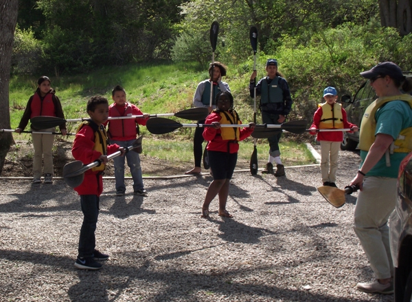
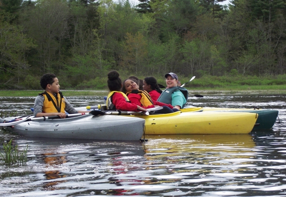
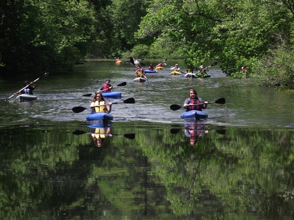
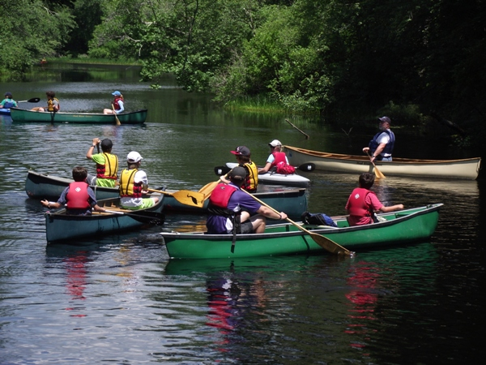
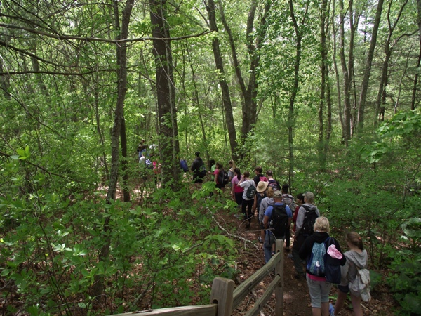
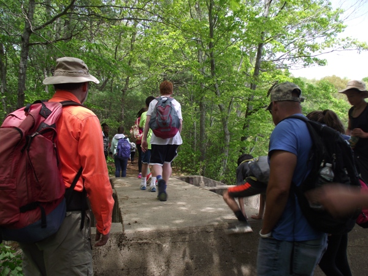
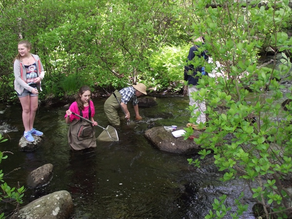
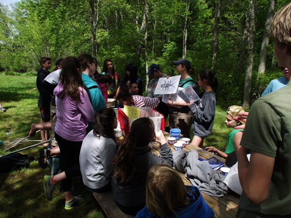

WPWA's Childrens' Educational Programs
Here at WPWA, our favorite endeavor is giving children the opportunity to experience the pristine and beautiful upper Wood River. Kids from first grade through college come to the WPWA campus or to Browning Mill Pond from all over Rhode Island. Many of the children have never been in a kayak or canoe before and they are often nervous about going out on the water in their own boat. Our staff and volunteers gently reassure the children, sometimes literally holding their hands as they get over their initial fear and start to enjoy themselves. As our staff guide the kids up the river or across the pond, our volunteers help to keep them out of the trees, off of the river banks, and pointed in the right direction. Volunteers give the kids paddling tips as needed, and sometimes even a tow.
We usually “raft” all of the boats together in Frying Pan Pond and have the kids silently experience the sights, sounds, and other sensations in the marsh for two minutes. They are surprised by the details they notice: bird calls, the sound of the breeze through the reeds, the damselflies landing on their boats (or bodies!), and so much more. We could not possibly give these kids this amazing experience without our wonderful members and volunteers, and we thank you.
Seventh grade students from Curtis Corner Middle School enjoyed a field trip to Browning Mill Pond in May, 2015. They sampled Roaring Brook for macroinvertebrates, went for a hike around the pond, and explored the pond from WPWA's fleet of kayaks. The kids learned a lot and had a great time!
|  |
 |
 |
 |
We also take kids on nature walks around Browning Mill Pond to teach them about plants and animals that are found in pond-side settings. They walk over the dam that connected the pond to the former trout hatchery and check out an old stone structure along the way.
|  |
 |
Another fun and educational activity is macroinvertebrate sampling in Roaring Brook, which flows into Browning Mill Pond. The kids don waders, grab some nets and buckets, and see what they can catch. Then, they gather around Program Director Denise Poyer and identify what they find.
|  |
 |